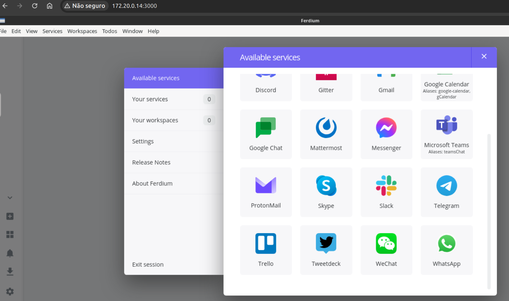
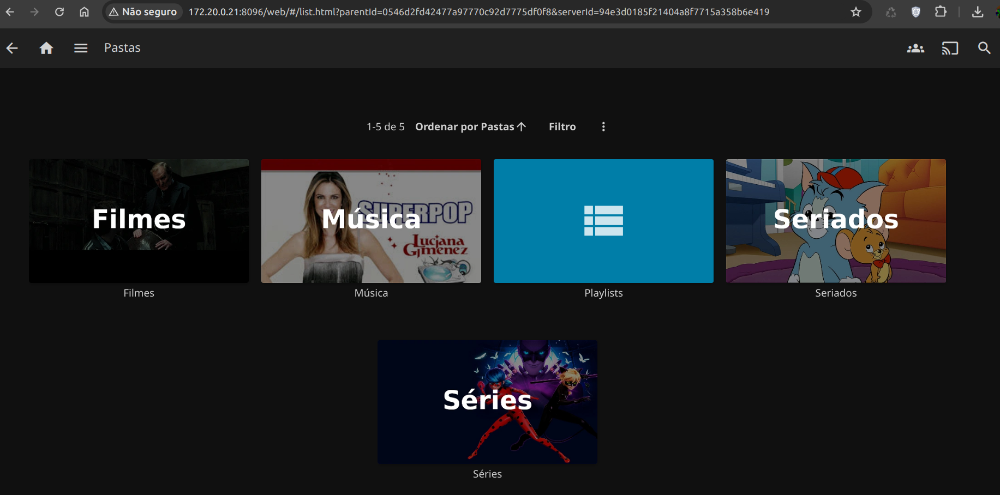
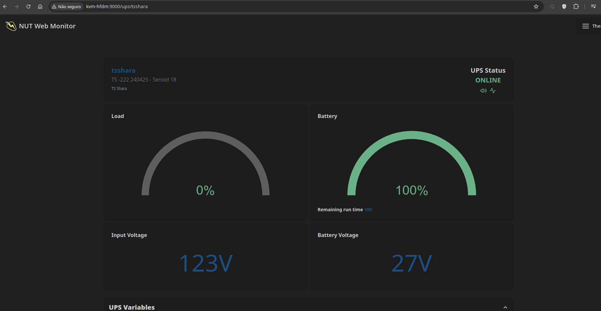
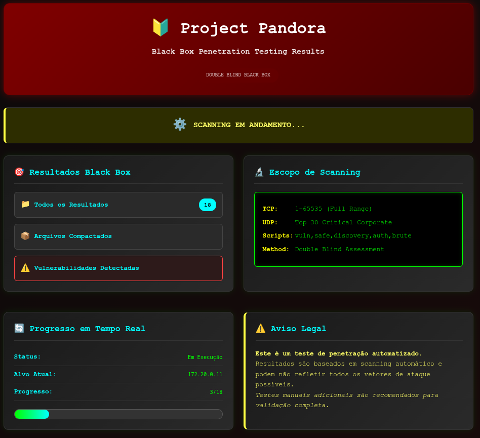

Banco de Dados
Suportando atualmente: MySQL, MariaDB, OracleXE 21C ou ElasticSearch
Descrição:
Bancos suportados: MySQL, MariaDB, OracleXE 21C e ElasticSearch
Opcional: PHPMyAdmin para manutenção de bancos de dados.
Backup periódico automático incluso de quaisquer bancos de dados descritos e baixo custo para mantê-los.
Algumas aplicações podem exigir especificidades para executar o OracleDB. Por padrão, este roda em CentOS.

ClamAV*
Antivírus para pastas compartilhadas na rede ou via Domínio.
Descrição:
Antivírus que funciona diretamente nos dados compartilhados na rede, vasculhando os discos do servidor.
Os discos podem ser quaisquer, desde HDD's externos à discos secundários de backup.
As varreduras são feitas 1x ao dia e os dados considerados inseguros são movidos para uma pasta separada.
*EXCLUSIVO PARA CONTRATOS.
Caso o contrato seja encerrado o serviço é descontinuado e removido.

Chromium Virtual Browser
Navegador Web acessível via Web para maior privacidade e/ou acesso ao Servidor.
Descrição:
Navegador de internet completo que funciona dentro do navegador permitindo que seja acessado por N estações de trabalho.
Também suporta aceleração de hardware e é capaz de reproduzir áudio/vídeo com baixa latência, incluindo mas não limitado ao Youtube®
Os downloads são direcionados a uma pasta customizada direto no servidor de arquivos se assim o preferir.
DashDot
Interface visual dos recursos de hardware atualmente em utilização pelo servidor.
Descrição:
Exibe diversas informações sobre o consumo de CPU, RAM, GPU, Rede e Armazenamento em um servidor, além de exibir detalhes do uso dos núcleos de processamento individualmente.
Também pode ser integrado ao Homarr através de iFrames.
Active Directory
Serviço de Active Directory e Controlador de Domínio (AD-DC) baseado no SAMBA.
Descrição:
Alternativa ao Active Directory da Microsoft, que suporta gerenciamento de Usuários, Grupos, Políticas de Grupos (GPO's), Silos de Autenticação, Unidades Organizacionais, compatibilidade com LDAP além de ser gerenciável através de RSAT, terminal ou via exclusiva WebUI (imagem abaixo).
Inclui um serviço de impressão CUPS na porta http://IP:631. A integração das impressoras com as regras do AD está sujeita à disponibilidade e em caráter de testes.
*A INTEGRAÇÃO DA VPN COM AD-DC É EXCLUSIVA PARA CONTRATOS.

Ferdium
Tenha todos os seus principais sites previamente logados direto na sua rede!
Descrição:
Alternativa ao RAMBOX, permite hospedar localmente um navegador que isola e inicializa diversos sites de redes sociais como o WhatsApp, Facebook, etc. Por exemplo, você pode acessar diversas contas de WhatsApp ao mesmo tempo dentro do serviço, cada aba é como um navegador próprio e isolado.
Ideal para quem possui diversos dispositivos e quer ter um controle granular de que todos tenham sempre os mesmos recursos Web sempre disponíveis, independentemente do sistema em uso.
O acesso pode ser protegido por uma senha.

FileBrowser*
Gestor de arquivos web, ideal para acesso a backups incrementais ocultos da rede.
Descrição:
Alternativa ao FilleZilla, permite o controle, gerenciamento, manutenção e suporte de diversas pastas e/ou arquivos no servidor.
Dentre os recursos destaco o editor de textos e delimitação de acesso de pastas à usuários com permissões customizáveis.
Ideal para busca e recuperação de backups incrementais!
*EXCLUSIVO PARA CONTRATOS.
Caso o contrato seja encerrado o serviço é descontinuado e removido.
Gestor UniFi*
Painel de controle para todos os equipamentos UniFi
Descrição:
Permite o controle, gerenciamento, manutenção e suporte aos WiFi's de equipamentos desenvolvidos sob a marca UniFi
*EXCLUSIVO PARA CONTRATOS.
Caso o contrato seja encerrado o serviço é descontinuado e removido.
GLPI*
Sistema de controle de chamados e controle de inventário.
Descrição:
Permite gestão de abertura de chamados de suporte técnico além de controle de inventário de um parque de infraestrutura de TI.
O vínculo LDAP e as notificações via e-mail e mobile só existem na versão paga.

Homarr*
Dashboard altamente customizável com suporte a atalhos e plugins.
Descrição:
Dashboard altamente customizável com suporte a links internos e externos, Ping integrado para vários serviços, integração com serviços como o PiHole, integração utilizando iFrames (para o Kuma e o DashDot por exemplo) além de exibir diversas outras informações como hora local e previsão do tempo.
Também pode ser utilizado para gerenciar containers em alternativa ao Portainer e o Pottava!
*EXCLUSIVO PARA CONTRATOS.
Caso o contrato seja encerrado o serviço é descontinuado e removido.

Jellyfin
Servidor multimídia para Músicas, Filmes e Séries.
Descrição:
Tenha uma Netflix® para chamar de sua, configure um servidor multimídia e facilite a gestão de suas séries e filmes.
Possui clientes para iOS, Android, SmarTVs LG, Amazon, Windows e Linux.
Não há suporte nativo à SmarTVs da Samsung.
Kiosk
Página web fixa para totens e kioskes interativos ou apenas visuais.
Descrição:
Utilizando um velho computador Celeron com 2Gb de RAM tenha em mãos um sistema Kiosk para visualizar vídeos, imagens, textos,
ou apenas exibir uma página da web com sistema de senhas online, serviços de servidores e outros. Suporta telas touchscreen.
Kuma*
Sistema de monitoramento de containers, serviços e sites com ping automático.
Descrição:
Monitoramento baseado em Ping para acompanhar o status de websites, serviços, containers e outros.
A gestão se dá por login e senha mas o resultado dos testes pode ser definido numa tela pública não interativa.
*EXCLUSIVO PARA CONTRATOS.
Caso o contrato seja encerrado o serviço é descontinuado e removido.
MySpeed
Realiza testes de velocidade de internet utilizando o SpeedTest by Ookla
Descrição:
Realiza testes de velocidade de hora em hora de forma automática.
Mantém um histórico e desenha gráficos das médias de download e upload.
Testes manuais podem ser feitos ao bel prazer do usuário.
Nextcloud
Sistema centralizado de colaboração em nuvem com foco em ser seguro e amigável.
Descrição:
Possui diversos applets como o Talk para comunicação, chat, videoconferências e afins; O OnlyOffice que é um pacote Office colaborativo; entre outros recursos, como vínculo com Active Directory.
ntfy
Sistema de notificação para diversos meios e sistemas incluindo mobiles.
Descrição:
Possui aplicativo mobile para receber notificações de diversas naturezas, como eventos de servidores e até eventos de usuários na rede.
Network UPS Tools*
Monitoramento de nobreaks pela USB e controle de desligamento automático.
Descrição:
Permite ser configurado em um rapsberry pi ou no próprio servidor e envia comandos de desligamento em caso de necessidade.
*EXCLUSIVO PARA CONTRATOS.
Caso o contrato seja encerrado o serviço é descontinuado e removido.
OnlyOffice*
Suíte office colaborativa alternativa ao Microsoft Office 365
Descrição:
Alternativa ao Microsoft Office 365 e ao Google Docs porém sem exigência de acesso à internet, sem contratos ou mensalidades.
Foco em ser colaborativo, permite que até 20 usuários simultâneos editem o mesmo documento.
OpenSpeedTest
Avalie a velocidade de conexão com o servidor localmente.
Descrição:
Permite fazer um teste de conexão com qualquer equipamento da rede para com o servidor, auxiliando a avaliar cabeamentos e se os roteadores WiFi estão respondendo adequadamente.
Também é muito útil para identificar a real velocidade de conexão entre o servidor e os clientes conectados à VPN!
Pandora PenTest*
Testes de Vulnerabilidades realizados localmente com serviço de relatórios integrado.
Descrição:
Realiza testes e gera relatórios do equipamento apontando o que é provavelmente vulnerável e possivelmente um ransomware possa estar em ação na rede.
O teste contempla o seguinte:
TCP: 1-65535 (Faixa Completa)
UDP: Top 30 Falhas Críticas em Empresas
Scripts: vuln,safe,discovery,auth,brute
Metodologia: Double Blind Assessment
*EXCLUSIVO PARA CONTRATOS.
Caso o contrato seja encerrado o serviço é descontinuado e removido.
PfSense
Firewall com suporte a diversos recursos como Load Balancer, VPN e outros.
Descrição:
Suporta os recursos e ferramentas mais importantes necessários para integração e segurança de uma rede:
Contempla balanceamento de carga de 2 ou mais internets, atualizações de DNS Dinamico (NO-IP), VPN através do IPSEC e do OpenVPN, enquanto possui diversas outras ferramentas como Cron e Patches de Segurança que podem ser aplicados imediatamente.
*A INTEGRAÇÃO DA VPN COM AD-DC É EXCLUSIVA PARA CONTRATOS.

PiHole
Servidor DNS local que faz um filtro de diversos sites maliciosos ou indesejados.
Descrição:
Permite, em redes mistas de computadores, servidores, tablets e/ou smartphones, bloquear:
Anúncios, telemetria, sites maliciosos, sites de phishing, ransomwares, roubo de carteiras de criptomoedas, abusos, fraude, pirataria, golpes, pornografia, discurso de ódio, incentivo às drogas, fake news, apostas, serviços de encontros online, domínio mortos, sites inúteis, sites que propagam malwares com fake news, além de sites de redes sociais (YouTube, Pinterest, Pixiv, Omegle, Patreon, TikTok, Facebook, Instagram, Snapchat, X/Twitter, Discord, Skype, WhatsApp, Spotify) e sites de páginas sobre criptomoedas legítimas.
QdirStat*
Monitoramento do tamanho dos arquivos e pastas em um servidor.
Descrição:
Acompanhe o consumo de armazenamento de SSDs, Discos Rígidos e NVMes em qualquer tipo de servidor!
*EXCLUSIVO PARA CONTRATOS.
Caso o contrato seja encerrado o serviço é descontinuado e removido.

qBitTorrent
Gestor de downloads de Torrents diretamente no servidor.
Descrição:
Gerencie seus downloads de Torrents de forma centralizada em um servidor dedicado. Interface web, os downloads são enviados para um disco pré-determinado.
Pode ser um complemento para o Jellyfin.
RClone
Faça backup para qualquer nuvem com este serviço.
Descrição:
Serviço de backup em Nuvem que pode tanto enviar arquivos quanto baixá-los de qualquer nuvem.
Suporta OneDrive, DropBox, Google Drive, Amazon S3, Google Photos, iCloud Drive, WebDAV e outros.
Reverse Proxy*
Sistema de controle externo para endereços FQDN.
Descrição:
Utilizado para se ter vários serviços que apontam para vários endereços de rede porém sob o mesmo IP externo.
Exemplos: Nextcloud, GLPI e ntfy acessíveis remotamente por 3 endereços distintos mas sendo o mesmo endereço Dynamic DNS, NO-IP e afins.
*EXCLUSIVO PARA CONTRATOS.
Caso o contrato seja encerrado o serviço é descontinuado e removido.
Servidor Apache
Servidor Web Apache2 para sites diversos e com suporte a plugins.
Descrição:
Permite configurar um login e senha padrão caso seja necessário proteger o conteúdo do site.
Suporta sites auto-hospedados incluindo mas não limitado ao Wordpress, sites criados e exportados a partir do WIX, sites para armazenar arquivos e etc.
Também pode ser configurado com Reverse Proxy!

Servidor CUPS
Servidor de impressão para impressoras USB e também de rede.
Descrição:
Há um CUPS incluso no Active Directory; este serviço é para algo exporádico e menos usual.
Suporta as principais impressoras do mercado com drivers nativos para HP, Ricoh, Samsung, Brother, Epson e outras.
O suporte à scanner é limitado!
Servidor FTP
Servidor FTP principalmente para Impressoras e Scanners em rede.
Descrição:
Ideal para impressoras de rede com protocolos obsoletos que não permitem scannear para redes samba 2 ou 3.
Pode ser configurado para ser acessado com usuário e senha ou permitir acesso anônimo.
Servidor RustDesk*
Alternativa ao AnyDesk porém sem qualquer limite de uso.
Descrição:
O servidor e o acesso são totalmente customizados, independente de servidores terceiros.
O limite da velocidade do acesso remoto é restrito integralmente à velocidade da rede contratada aonde o servidor está hospedado.
*EXCLUSIVO PARA CONTRATOS.
Caso o contrato seja encerrado o serviço é descontinuado e removido.
Servidor SAMBA
Servidor SAMBA para compartilhamento de pastas na rede (sem Domínio).
Descrição:
Para casos em que se precisa compartilhar pastas na rede de forma simples com SAMBA mas não há necessidade de algo complexo quanto um controlador de domínio e regras de GPO.
Um uso comum é criar um compartilhamento com poucos usuários e senhas que sabe-se de antemão que improvavelmente serão alterados a longo prazo.
Servidor OpenFire*
Servidor base de aplicações como o Spark IM Messenger!
Descrição:
Servidor Web na versão 4.7.3
Devido à alterações da base recente 4.8+, não é mais possível configurar o Spark Messenger sem um servidor de certificados TLS.
A atualização para versões acima da 4.8+ é possível porém apenas em casos de extrema necessidade.
*EXCLUSIVO PARA CONTRATOS.
Caso o contrato seja encerrado o serviço é descontinuado e removido.
sist-2*
Indexador poderoso com base em Elastic Search!
Descrição:
Indexe terabytes de dados e encontre tudo o que precisar em poucos segundos.
*EXCLUSIVO PARA CONTRATOS.
Caso o contrato seja encerrado o serviço é descontinuado e removido.
Syncthing
Sistema de backup peer-to-peer com suporte incremental e versionamento.
Descrição:
Sistema de backup que pode ser gerenciado via Web e permite backups incrementais e até mesmo com lixeira temporária para evitar deleções acidentais.
Útil para se manter dois servidores distintos com dados iguais, com configurações amplas, por exemplo, mão-única ou via dupla!
Tailscale*
Permite liberar acessos a serviços que estejam sob CGNAT, 3G e outros!
Descrição:
Interligue diversos equipamentos, clientes, servidores e/ou serviços, através de uma VPN MESH, sem necessidade de abrir portas em modems, roteadores ou firewalls. Funciona em quaisquer tipos de redes privadas ou bloqueadas: Mobile 3G, Internet à Rádio, CGNAT, etc.
A versão gratuita conta com as seguintes restrições:
> Limitado a 3 usuários.
> Limitado a 100 equipamentos.
*EXCLUSIVO PARA CONTRATOS.
Caso o contrato seja encerrado o serviço é descontinuado e removido.

Ubuntu Server 24.04 LTS
Sistema operacional com suporte à ampla gama de serviços a serem contratados.
Descrição:
Base fundamental dos serviços a serem implantados, com suporte a Virtualização, maior diversidade de hardwares,
alta durabilidade e estabilidade garantidos pela Canonical®.
Windows Virtualizado
Sistema operacional adicional com ferramentas RSAT e bancos de dados.
Descrição:
Para casos como a adição de banco de dados TGA, Alterdata e etc ou ainda para acessar as Ferramentas de Gestão de AD.
XPRA
Acesso às máquinas virtuais do servidor por interface web.
Descrição:
Permite o gerenciamento, criação, destruição, cópia e etc, de quaisquer máquinas virtuais existentes no servidor.
Pode ser utilizado para configurar qualquer sistema convencional como Linux, Windows ou mesmo FreeBSD.
Também pode ser utilizado para inicializar sistemas emulados, como o Android e o macOS.